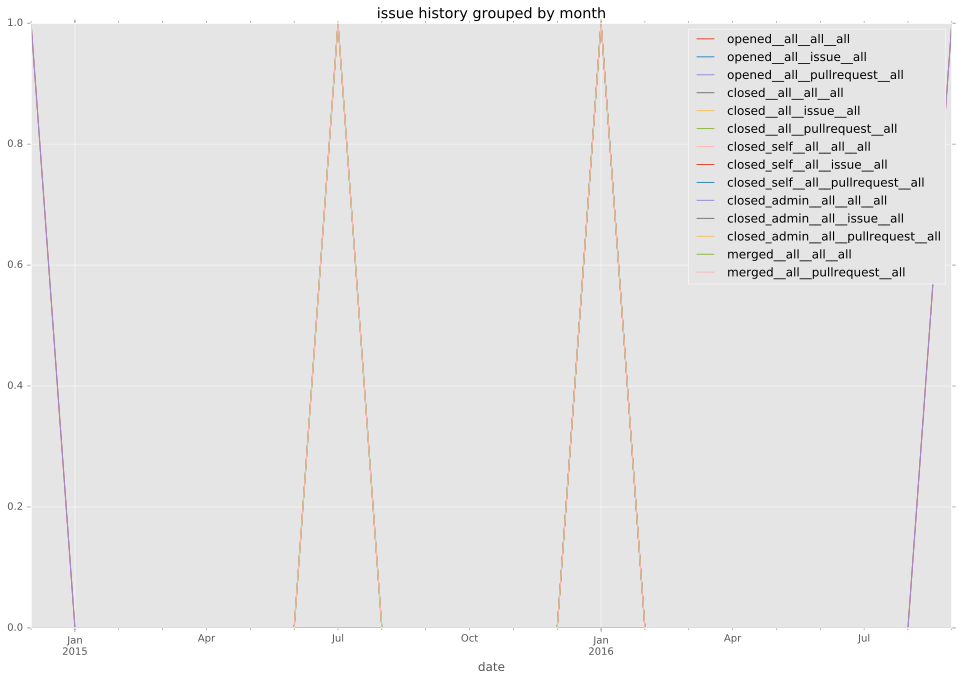
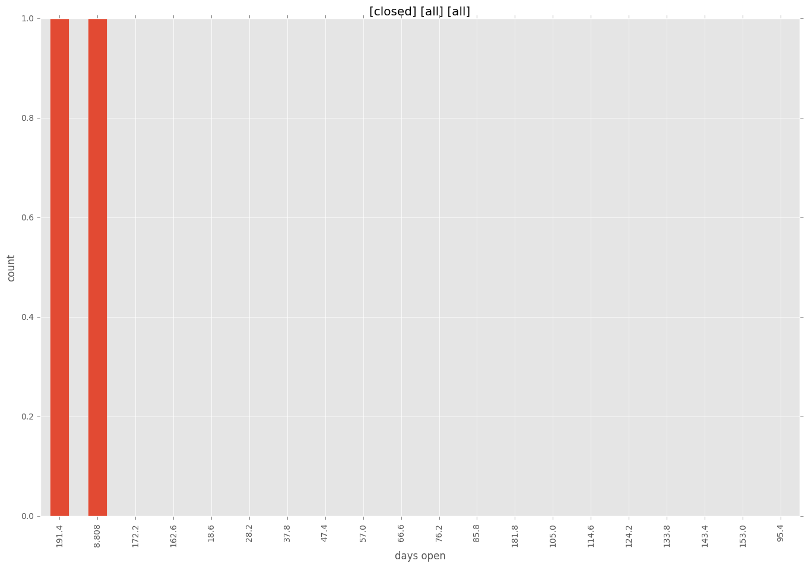
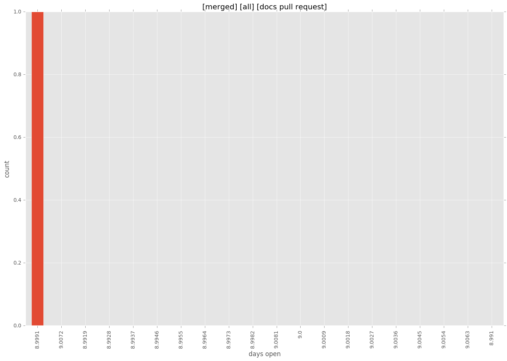
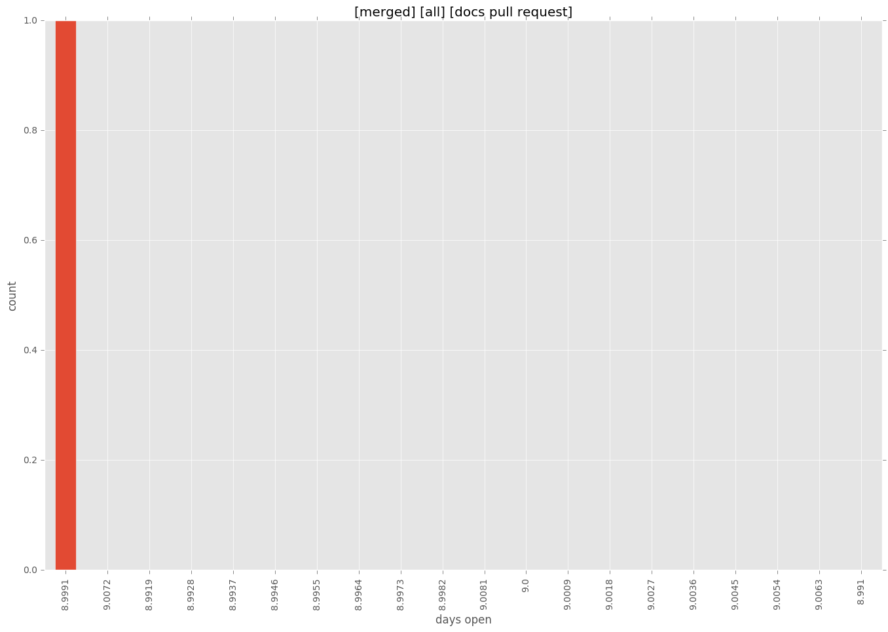

total issue counts
bugfix pull request: 1
pullrequest: 3
docs pull request: 1
new plugin: 1
issue history

days open by issue type
bugfix pull request
count: 0
std: nan
min: nan
max: nan
median: nan
mean: nan
all
count: 4
std: 110.851251684
min: 9
max: 201
median: 105.0
mean: 105.0
pullrequest
count: 0
std: nan
min: nan
max: nan
median: nan
mean: nan
docs pull request
count: 2
std: 0.0
min: 9
max: 9
median: 9.0
mean: 9.0
new plugin
count: 2
std: 0.0
min: 201
max: 201
median: 201.0
mean: 201.0
closures grouped by total days open



 
